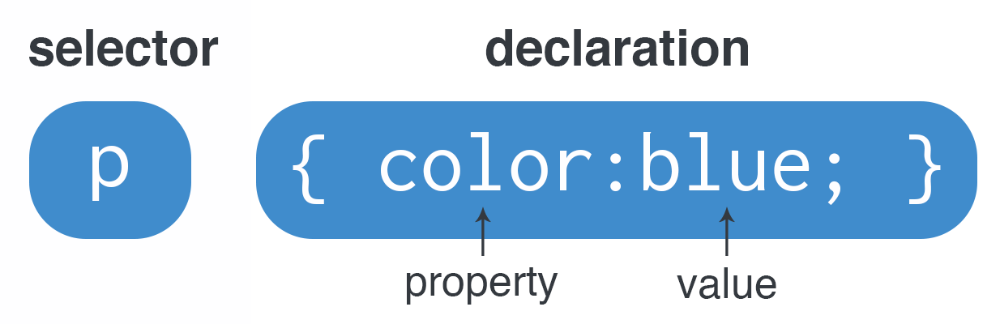

C++ Programming Language |
 |
C++ |
 |
C++is a general-purpose programming language created by Bjarne Stroustrup as an extension of the C programming language, or "C with Classes". The language has expanded significantly over time, and modern C++ now has object-oriented, generic, and functional features in addition to facilities for low-level memory manipulation. It is almost always implemented as a compiled language, and many vendors provide C++ compilers, including the Free Software Foundation, LLVM, Microsoft, Intel, Oracle, and IBM, so it is available on many platforms |
Python Programming Language |
 |
Python |
 |
Python is an interpreted high-level general-purpose programming language. Python's design philosophy emphasizes code readability with its notable use of significant indentation. Its language constructs as well as its object-oriented approach aim to help programmers write clear, logical code for small and large-scale projects.[30]
Python is dynamically-typed and garbage-collected. It supports multiple programming paradigms, including structured (particularly, procedural), object-oriented and functional programming. Python is often described as a "batteries included" language due to its comprehensive standard library.[ |
Html Programming Language |
|
Html |
 |
The HyperText Markup Language, or HTML is the standard markup language for documents designed to be displayed in a web browser. It can be assisted by technologies such as Cascading Style Sheets (CSS) and scripting languages such as JavaScript.
Web browsers receive HTML documents from a web server or from local storage and render the documents into multimedia web pages. HTML describes the structure of a web page semantically and originally included cues for the appearance of the document. |
Css Programming Language |
 |
Css |
 |
Cascading Style Sheets (CSS) is a style sheet language used for describing the presentation of a document written in a markup language such as HTML.[1] CSS is a cornerstone technology of the World Wide Web, alongside HTML and JavaScript.[2]
CSS is designed to enable the separation of presentation and content, including layout, colors, and fonts.[3] This separation can improve content accessibility, provide more flexibility and control in the specification of presentation characteristics, enable multiple web pages to share formatting by specifying the relevant CSS in a separate .css file which reduces complexity and repetition in the structural content as well as enabling the .css file to be cached to improve the page load speed between the pages that share the file and its formatting. |